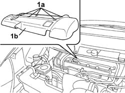
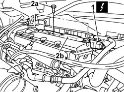

5510C10 IGNITION COIL/S - R+R
- Path
- Procedures > 55 ELECTRICAL EQUIPMENT > 5510 ENGINE IGNITION > 5510C COIL, ECU, SENSORS > 5510C10 IGNITION COIL/S - R+R
- Kind
- repair procedure (removal / refitting; the operation number is the code)
- Applies to
- engines: 2.0 16v; all production periods
- Interactive page
- https://sloeber94.github.io/elrnDB-fUlss/en/#/179007537
Applies to: engines: 2.0 16v; all production periods
 Removing
Removing
 Refitting
RefittingOp. 5530B56 BATTERY DRIP TRAY COVER - R.R.
- Disconnect the negative battery terminal.
1. Rotate the fixing pins (1a) through 90° and remove the coil cover (1b).

Applies to: engines: 2.0 16v; all production periods
1. Disconnect the electrical connections for the coils.
2. Undo retaining bolts (2a) and remove the coils (2b).

Applies to: engines: 2.0 16v; all production periods
Refitting
Removing- Fit the coils and tighten the fixing bolts.
- Connect the electrical connections for the coils.
- Fit the coil cover and rotate the fixing pins through 90° to fasten it.
- Connect the negative battery terminal.